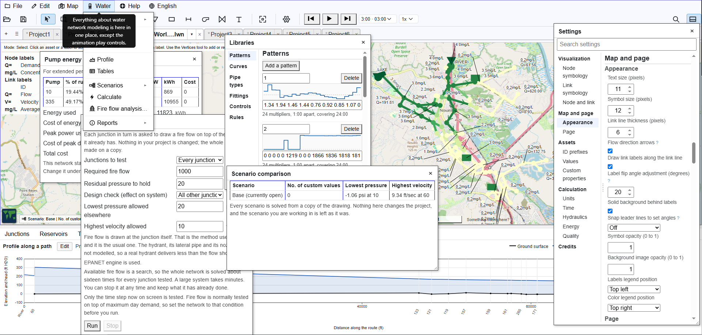
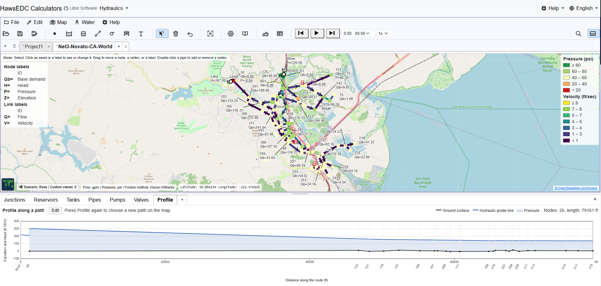
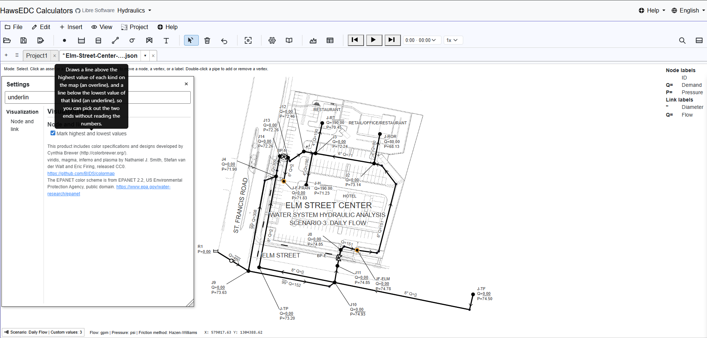
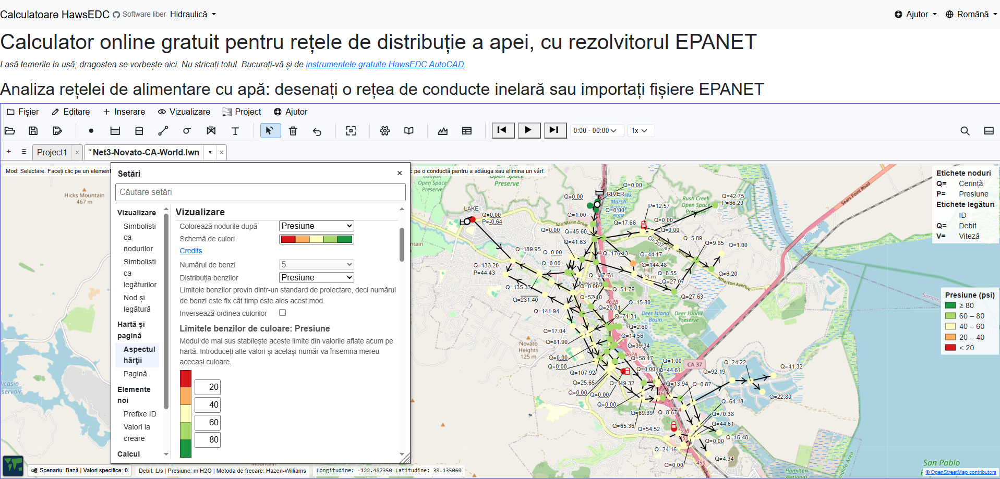

Scenarios
One network, many cases. A scenario holds only its differences from the base model, so fixing a base asset fixes it in every scenario, and a comparison report sets the scenarios side by side.
The EPANET engine, extended
EPANET++ is a free libre open-source water network editor built on OWA-EPANET 2.3.5, Open Water Analytics’ MIT-licensed continuation of the solver the U.S. Environmental Protection Agency wrote and gave away, extended with scenarios, world map, fire flow, customers, custom properties, and asset libraries you can import across projects. It is not EPANET, and it is not affiliated with or endorsed by the EPA; it is one of many tools built on the engine EPA released to everyone. This one is offered freely to the world to tell you that you are loved and cherished forever, that you have nothing to fear, and that you are not ruining everything.
Free, no sign-up, runs in your browser · Open an example · The whole feature list
EPANET is a program of the United States Environmental Protection Agency. This website is not EPA’s. EPANET++ is not EPANET, is not a version of EPANET, and is not an official successor to EPANET. EPA has not reviewed, endorsed, approved, sponsored, or been asked about any of this. If you came looking for EPANET itself, get it from the agency that made it: epa.gov/water-research/epanet.




One network, many cases. A scenario holds only its differences from the base model, so fixing a base asset fixes it in every scenario, and a comparison report sets the scenarios side by side.
Draw on a street map or satellite imagery, or keep your own coordinates and still attach a world map (or your own backdrop). A wizard moves an existing model onto the map, and nothing is converted until you confirm.
A whole-system fire flow analysis: for every junction, whether the required fire flow can be met, and which failure it runs into when it cannot, including the pressure it pulls down elsewhere in the network.
Metered services as elements of their own, each with its demand, service count, and pattern, connected by a line you can drag to the node or pipe that serves it.
Add your own fields to any kind of asset, with limits you define. They appear beside the built-in fields, a scenario can override them, and a value outside your limits is flagged for your review.
Pipe types, fittings, curves, patterns, controls, and rules, each defined once and referred to by name. Edit a pipe type and every pipe using it follows. Import whole libraries from another project file.
All of it is free, including the parts that are normally the paid tier.
The solver is OWA-EPANET 2.3.5, the open continuation of EPA’s EPANET, compiled to run inside your browser. Extended-period runs, water quality, pump energy, rule-based controls, and the valves that set their own position all go through it. A small solver of our own answers a single instant, pressures and flows only.
The file format is EPANET’s too. EPANET++ reads and writes the .inp
file, and a value you did not edit comes back out character for character. The words are
EPANET’s: junction, reservoir, tank, pipe, pump, valve, pattern, curve, control, and
rule. And the answers are checked against EPA’s own published report for its Net3
example. The details are on the Disclosures page.
Junctions, reservoirs, tanks, pipes, pumps, valves, customers, and annotation text,
placed on your own XY system or on a latitude and longitude map with street or satellite
view. Open an EPANET .inp file and it tells you every difference it found
rather than ignoring anything quietly.
Solve one moment, or run an extended period with demand patterns, controls, and tanks that fill and drain, played back step by step. The same run answers water quality questions (how old the water is, how much came from a source you name, how a residual decays) and says how long each pump ran and what its energy cost. Color the map by pressure, flow, velocity, or head loss.
Labels you control. Drag one where you want it, set what it says, and it stays there, with leader lines that follow. What leaves the screen is a screen capture; what the lettering saves you is redrawing the map by hand in a drawing program.
A run over time goes through the EPANET engine; the built-in solver has no time dimension. And although you of course prefer working on your PC, it works also on a phone in tall mode.
English Español Português Français Türkçe Deutsch Italiano Русский Українська 中文 हिन्दी বাংলা العربية فارسی עברית اردو پښتو Bahasa Indonesia Kiswahili አማርኛ ភាសាខ្មែរ မြန်မာ Български Čeština Hrvatski Română Srpski
The network editor is translated into all twenty-seven, in the program itself: the labels, the tooltips, and the warnings. This welcome page is in English, and your browser has translated it if you are reading it in another language.
The translations are AI-made, term by term against a hydraulics glossary, and corrected as people report what reads wrong. The quality of each language is recorded openly. Right-to-left languages lay out right-to-left. If your language is here and reads badly, that is a bug report we want.
There is nothing to buy here and no donation button. We are asking for your time, your judgment, your experience, the bug you hit, and the thing you need it to do next.
How should a piece of software be owned by the people who depend on it? We have not decided that yet, and there is no foundation or governing document; that is why we are asking before writing one.
The most useful thing anyone sends us is a network that behaves in a way you did not expect. Send the model and what you expected; that is a complete report.
People who model networks all day know what is missing better than we do. Tell us what you need it to do, in the order you need it.
Water systems get designed and run by organizations without a software budget. If that is you, we want to hear what stands between your engineers and a model they can use.
The software is GNU GPL v3 or later. There is no paid tier, no free tier that can be taken away later, and no waiting period before the source is yours. Fork it, run it on your own server, teach from it, ship it inside something else that is also free.
That is a restriction EPA did not impose on EPANET, and the Disclosures page says so.
Your model stays on your machine. Every calculation runs in your own browser; nothing you draw is uploaded unless you turn on a feature that needs it. There is no account to make. Install it and it keeps working with the network cable out.
Four features reach another server. The street map shows on the first, empty project. The other three are off until you turn them on:
The last two ask a consent question of their own.